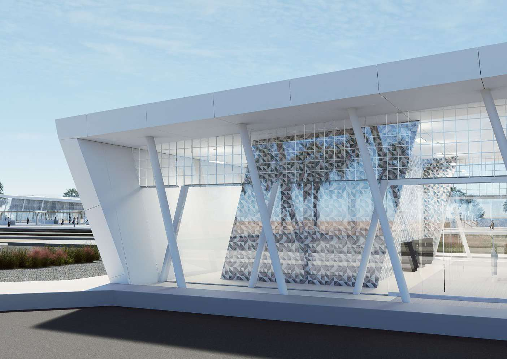

Work
Places already alive. 14 projects in Paris, Morocco and Tunisia, from 2022 to 2026.
Showing 14 of 14 projects
Professional | Paris


Professional | Morocco
-

-

-

-

-

-

-

Academic | ENAU, University of Carthage


No project matches this filter.